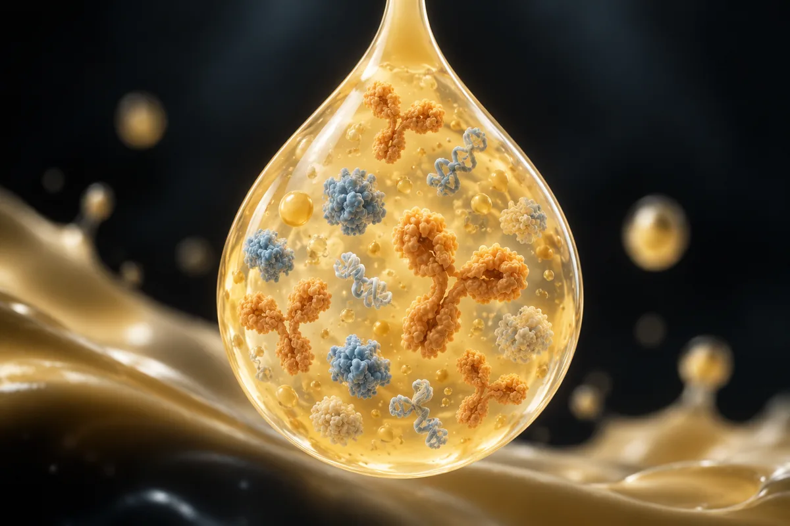

Colostro bovino
No Brasil, suplemento de colostro pode ter no máximo 4 g por dia; os estudos de treino usaram de 10 a 60 g, e na maioria o IGF-1 do sangue não subiu.

实验性材料。在使用这里的任何东西之前请先阅读。
本页没有任何内容属于医疗建议、处方或治疗方案。这是对研究社群中流传的方案的整理翻译，以及在存在的情况下，已发表试验所测试过的内容。两者的标记方式不同 — 它们并不等价。
这里的大部分化合物没有获得 FDA 批准用于人体。其中不少以“仅供研究使用”的标签出售，这意味着它们没有经过供人摄入的纯度、无菌或含量管控。社群描述的剂量不是被验证过的剂量：它只是某个人报告自己那样做了。
在考虑使用其中任何一种化合物之前，请先与有资质的医疗专业人员谈一谈。如果你已经在用某一种，并且感到有预期之外的情况，请去就医 — 不要等下一次常规体检。
摘要
O colostro bovino é a primeira secreção da mama da vaca depois do parto, rica em imunoglobulinas, lactoferrina e fatores de crescimento como o IGF-1. Em treino de força, os ensaios compararam colostro com whey: um viu mais massa magra com colostro, os outros não viram diferença no músculo. Em vários ensaios, o IGF-1 do sangue não mudou, e o IGF-1 tomado por boca chega ao sangue fragmentado. O efeito mais consistente é em marcadores de permeabilidade do intestino. A WADA não proíbe o colostro, mas desaconselha seu uso por atletas, e no Brasil essa advertência é obrigatória no rótulo, com máximo de 4 g por dia.
本页为什么存在
O colostro bovino aparece descrito num vídeo curto sobre treino que vi publicado na internet, como o "verdadeiro ouro biológico" que o whey não entrega. O whey seria o "soro que sobra do queijo", e o colostro, o leite das primeiras 48 horas depois do parto, uma "matriz carregada de IGF-1, lactoferrina e imunoglobulinas, feita pra dobrar o peso de um bezerro em semanas". Atletas de força teriam ganhado massa magra e regeneração acelerada. O whey entregaria "os tijolos"; o colostro, os "fatores de sinalização" que mandam construir. Ele protegeria a barreira do intestino, melhoraria a absorção de micronutrientes, aceleraria a síntese de proteína e cortaria "pela metade" o tempo de fadiga. Por fim, aquecer o pó ou misturar com líquido quente "desnaturaria os fatores de crescimento e anularia a bioatividade", e a "dosagem exata, temperatura limite e timing" estariam num protocolo pago.
É um vídeo só, mas o colostro tem mais estudos em pessoas do que a média dos temas deste site. Separei 12 alegações verificáveis e confrontei cada uma com os ensaios. Nenhum número desta página veio da fonte secundária do site.
O IGF-1 do colostro existe; o que se discute é se ele chega ao sangue
O colostro tem, de fato, fatores de crescimento. Segundo a revisão de Shing e colegas (2009), ele contém IGF, fatores de crescimento transformadores, imunoglobulinas, citocinas, lactoferrina e lisozima, além de hormônios. A mesma revisão diz que há "dados contraditórios para a maioria dos parâmetros" estudados no esporte e que não dá para comparar os estudos, porque cada um usou dose, duração e produto diferentes.
A pergunta que decide a alegação de "sinalização" é se o IGF-1 bebido chega inteiro ao sangue. Mero e colegas (2002) deram IGF-1 humano marcado com iodo radioativo por boca a 12 pessoas: uma hora depois, 96% da radioatividade estava num fragmento pequeno, e nada aparecia na posição do IGF-1 livre ou ligado às suas proteínas. Os autores concluíram que os dados "não dão apoio à absorção de IGF-1 do colostro bovino".
Os estudos que mediram o IGF-1 no sangue divergem. Dois estudos finlandeses do mesmo grupo (Mero 1997 e 2002) viram o IGF-1 subir com colostro. Outros cinco não viram mudança: com 60 g por dia em força e salto por 8 semanas (Buckley 2003), em corrida por 8 semanas (Buckley 2002), em 4 semanas antes de exame antidoping (Kuipers 2002), em idosos por 8 semanas (Duff 2014) e em três protocolos de 1 dia, 4 semanas e 12 semanas (Davison 2020). Neste último, um dos autores é consultor de um fabricante de colostro.
到底有多少证据
Os números abaixo foram levantados por mim em 16 de outubro de 2026, no PubMed e no ClinicalTrials.gov. A consulta de cada linha está ao lado do número, para qualquer pessoa repetir e me contradizer.
| 基础 | 检索式 | 结果 |
|---|---|---|
| PubMed | "bovine colostrum" OR "colostrum bovinum" | 1.122 artigos |
| PubMed | ("bovine colostrum" OR "colostrum bovinum") AND (Randomized Controlled Trial[Publication Type] OR Meta-Analysis[Publication Type]) | 111 artigos |
| PubMed | ("bovine colostrum" OR "colostrum bovinum") AND (exercise OR athletes OR training OR "body composition" OR "lean mass" OR performance) | 233 artigos |
| PubMed | ("bovine colostrum" OR "colostrum bovinum") AND (exercise OR athletes OR training OR "body composition" OR "lean mass" OR performance) AND (Randomized Controlled Trial[Publication Type] OR Meta-Analysis[Publication Type]) | 60 artigos |
| PubMed | ("bovine colostrum" OR "colostrum bovinum") AND (IGF-1 OR IGF-I OR "insulin-like growth factor") | 52 artigos |
| PubMed | ("bovine colostrum" OR "colostrum bovinum") AND (intestinal permeability OR gut permeability) | 62 artigos |
| PubMed | ("bovine colostrum" OR "colostrum bovinum") AND (testosterone) | 4 篇文章 |
| ClinicalTrials.gov | intervenção: bovine colostrum | 50 estudos registrados |
| ClinicalTrials.gov | intervenção: colostrum | 117 estudos registrados |
| ClinicalTrials.gov | intervenção: (colostrum) AND AREA[Phase]PHASE3 | 6 ensaios de fase 3 |
| ClinicalTrials.gov | termo livre (não só intervenção): colostrum AND (exercise OR athletes OR training) | 23 estudos registrados |
对这些数字的诚实解读
- Há ensaios de verdade, mas pequenos. Os ensaios de treino que li tiveram de 9 a 51 participantes. Não achei meta-análise específica de colostro sobre massa muscular; a meta-análise em rede de 2024 o põe no grupo das proteínas do leite, junto com whey, caseína e iogurte.
- O produto muda de estudo para estudo. Concentrado de proteína de colostro, colostro integral, desnatado, em pó, em bebida. A revisão de 2009 diz que isso impede comparar os resultados.
- O placebo costuma ser whey. Por isso, "colostro igual ao whey" é um resultado frequente, e não quer dizer que nenhum dos dois funciona: quer dizer que o colostro não mostrou vantagem sobre a proteína comum.
- Só um registro de fase 3 é de esporte: um estudo de atletas de endurance na Polônia, com 58 participantes, concluído. Os outros são de hepatite alcoólica, doença vascular, permeabilidade do intestino em doença alcoólica, efeito no sistema imune num instituto de perinatologia e anticorpos contra Clostridium difficile (retirado).
- Testosterona: 4 artigos, nenhum ensaio de efeito em homem que treina força. Um é um piloto com 10 ciclistas que mediu testosterona na saliva; outro mediu os hormônios naturais presentes no próprio colostro.
- Contagem de artigo mede atenção acadêmica, não evidência de desfecho.
支撑这些说法的研究
Segundo o PubMed, estes são os trabalhos concretos por trás do que se diz sobre colostro, músculo, IGF-1 e intestino. Leia o que cada um mediu, e em quantos.
| 研究 | N | 背景 | 它报告了什么 | 保留 |
|---|---|---|---|---|
| Antonio et al., 2001 Nutrition 17(3):243-7 · PMID 11312068 | não informado no resumo | Homens e mulheres ativos, treino aeróbio e de força, 8 semanas; 20 g/dia de colostro ou whey | Massa magra sem osso +1,49 kg com colostro; peso +2,11 kg com whey; força e resistência sem mudança | O único que viu massa magra a mais; o resumo não dá o N |
| Brinkworth et al., 2004 Eur J Appl Physiol 91(1):53-60 · PMID 14504943 | 34 (17 + 17) | Homens jovens, treino de um braço, 8 semanas; 60 g/dia de colostro ou whey | Braço treinado com mais área no colostro, mas pela pele e gordura sob a pele; força igual nos dois grupos | Os autores atribuem a diferença à pele, não ao músculo |
| Buckley et al., 2003 J Sports Sci 21(7):577-88 · PMID 12848392 | 51 (26 + 25) | Homens, força e pliometria, 8 semanas; 60 g/dia de colostro ou whey | Potência de pico no salto e na bicicleta maior com colostro na 8ª semana; 1RM igual; IGF-1 sem mudança (P = 0,55) | Efeito em potência, não em força nem em massa |
| Duff et al., 2014 Int J Sport Nutr Exerc Metab 24(3):276-85 · PMID 24281841 | 40 (15 homens, 25 mulheres) | Adultos de cerca de 59 anos, treino de força, 8 semanas; 60 g/dia de colostro ou whey | Leg press +24 kg contra +8 kg; menos reabsorção óssea; massa magra e espessura muscular iguais; IGF-1 sem mudança | Idosos; massa magra sem diferença |
| Mizelman et al., 2026 Eur J Appl Physiol 126(1):285-294 · PMID 40640599 | 29 | Jogadores de rúgbi, 8 semanas; 38 g/dia de colostro ou soja | Salto vertical +1,0 cm contra −0,5 cm; força, potência aeróbia, composição corporal e marcadores imunes sem diferença | Temporada competitiva |
| Coombes et al., 2002 Med Sci Sports Exerc 34(7):1184-8 · PMID 12131260 | 42 | Ciclistas, 8 semanas; 20 g ou 60 g de colostro, ou 60 g de whey | Contrarrelógio mais rápido com 20 g (158 s) e 60 g (134 s) que com placebo (37 s) | 20 g e 60 g deram resultado parecido |
| Buckley et al., 2002 J Sci Med Sport 5(2):65-79 · PMID 12188088 | 30 | Corredores, 8 semanas; 60 g/dia de colostro ou whey | Primeiro teste até a exaustão igual; segundo teste, 20 min depois, melhor com colostro na 8ª semana; IGF-1 sem mudança | Efeito na recuperação entre esforços, não no desempenho inicial |
| Mero et al., 2005 Amino Acids 28(3):327-35 · PMID 15789141 | 12 | Homens ativos, 2 semanas; 20 g/dia de colostro ou maltodextrina; traçador de aminoácido e biópsia | Síntese e quebra de proteína muscular subiram as duas; saldo líquido e força sem diferença | Pequeno; mediu em jejum |
| Mero et al., 2002 J Appl Physiol 93(2):732-9 · PMID 12133885 | 30 (19 + 11) e 12 | Atletas, 2 semanas; 20 g/dia de colostro ou maltodextrina. Segundo estudo: IGF-1 marcado por boca | IGF-1 e IgA na saliva subiram com colostro; o IGF-1 bebido apareceu no sangue fragmentado | Os autores dizem que os dados não apoiam a absorção do IGF-1 do colostro |
| Kuipers et al., 2002 Nutrition 18(7-8):566-7 · PMID 12093430 | 9 | Homens de endurance, 4 semanas; 60 g/dia | IGF-1 de 31 para 33 nM/L, sem mudança; exame antidoping negativo antes e depois | Pequeno; não testa o risco de contaminação de outros produtos |
| Davison et al., 2020 Eur J Nutr 59(4):1473-1479 · PMID 31123862 | 16; 20; 54 | 40 g em 1 dia; 20 g/dia por 4 semanas; 20 g/dia por 12 semanas | IGF-1 sem mudança nos três protocolos | Um autor é consultor de fabricante de colostro, como declarado |
| Marchbank et al., 2011 Am J Physiol Gastrointest Liver Physiol 300(3):G477-84 · PMID 21148400 | 12 | Cruzado, 14 dias de colostro ou placebo antes de exercício pesado | Permeabilidade do intestino subiu 2,5 vezes com placebo; com colostro, o aumento foi 80% menor | Pequeno; marcador urinário, não sintoma |
| Hajihashemi et al., 2024 (meta-análise) Dig Dis Sci 69(4):1345-1360 · PMID 38361147 | 10 artigos | Atletas saudáveis e pacientes | Razão lactulose/ramnose −0,24 (IC 95% −0,43 a −0,04); I-FABP sem diferença | Heterogeneidade de 99% nessa medida |
| Główka et al., 2020 (meta-análise) Nutrients 12(4):1023 · PMID 32276466 | 10 ensaios, 239 participantes | Atletas e pessoas ativas | Impacto nulo ou baixo em imunoglobulinas, linfócitos e neutrófilos | O PubMed registra financiamento de uma fundação de pesquisa em nutrição |
| Zhou et al., 2024 (meta-análise em rede) Int J Sport Nutr Exerc Metab 34(1):54-64 · PMID 38039960 | 116 ensaios, 4.711 participantes | Tipos e horários de proteína com treino de força | Proteínas do leite (leite, whey, iogurte, caseína e colostro) eficazes para massa e força, certeza moderada | Agrupa o colostro com o whey |
已发表人体研究中使用的剂量
Isto não é recomendação de dose: é o registro do que foi administrado em estudos publicados, com a finalidade de cada um. Fora do contexto do estudo, esses números não se transferem. Atenção: no Brasil, o máximo permitido em suplemento é 4 g por dia para adultos, bem abaixo de todas as doses abaixo.
| 研究 | 剂量 | 持续时间 | 研究目的 |
|---|---|---|---|
| Antonio et al., 2001 | 20 g/dia | 8 周 | Composição corporal e desempenho |
| Brinkworth et al., 2004; Buckley et al., 2003; Duff et al., 2014 | 60 g/dia | 8 周 | Músculo, força e potência com treino |
| Mizelman et al., 2026 | 38 g/dia | 8 周 | Desempenho e imunidade no rúgbi |
| Coombes et al., 2002 | 20 g ou 60 g/dia | 8 周 | Dose e desempenho em ciclismo |
| Mero et al., 2002 e 2005; Davison et al., 2020 | 20 g/dia | 2 a 12 semanas | IGF-1, imunidade e síntese de proteína |
| Kuipers et al., 2002 | 60 g/dia | 4 周 | IGF-1 e exame antidoping |
| Marchbank et al., 2011 | não informado no resumo | 14 天 | Permeabilidade do intestino |
Das 12 alegações, 2 se confirmam, e a de "sinalização" que o whey não dá não se sustenta
Cada linha é uma alegação como ela circula, sem o nome de quem a fez. O veredito usa seis rótulos: confirmado, parcialmente, não sustentado, sem estudo em humanos, só animal ou in vitro e número não encontrado na fonte citada.
| O que se diz | O que os estudos mostram | 结论 |
|---|---|---|
| O colostro é o leite das primeiras 48 horas depois do parto, "feito pra dobrar o peso de um bezerro em semanas" | É a primeira secreção da mama depois do parto (Duff 2014; Shing 2009); NÃO VERIFIQUEI o limite de 48 horas nem o ritmo de ganho de peso do bezerro | Parcialmente |
| É uma matriz de IGF-1, lactoferrina e imunoglobulinas | A revisão de 2009 lista IGF, imunoglobulinas, lactoferrina e outros fatores | Confirmado |
| O whey entrega só "tijolos"; o colostro entrega a "sinalização" que manda o corpo construir | O IGF-1 bebido chega ao sangue fragmentado (Mero 2002); em cinco estudos o IGF-1 do sangue não mudou; em dois do mesmo grupo, subiu | Não sustentado |
| Atletas de força ganharam massa magra "real" com colostro, que a proteína comum não entrega | Um ensaio viu +1,49 kg de massa magra contra whey (Antonio 2001); outros três não viram diferença no músculo contra whey ou soja (Brinkworth 2004, Duff 2014, Mizelman 2026) | Parcialmente |
| Regeneração dos tecidos acelerada | Recuperação melhor num segundo esforço feito 20 min depois (Buckley 2002); síntese e quebra de proteína subiram juntas, sem ganho líquido (Mero 2005) | Parcialmente |
| Protege a barreira do intestino | Permeabilidade menor numa meta-análise de 10 artigos e num cruzado com exercício pesado | Confirmado (em marcadores; heterogeneidade alta) |
| Melhora a absorção de micronutrientes | Não localizei estudo humano que tenha medido isso | Sem estudo em humanos |
| Acelera a síntese de proteína | A síntese subiu, mas a quebra também, e o saldo não mudou (Mero 2005, 12 homens) | Parcialmente |
| A modulação imune corta "pela metade" o tempo de fadiga | A meta-análise de 2020 achou impacto nulo ou baixo nos marcadores imunes; não localizei estudo com fadiga reduzida à metade | Não sustentado |
| Aquecer o pó ou misturar com líquido quente desnatura os fatores e anula a bioatividade | Em bezerros, o colostro aquecido teve menos IgG (−7,4 g/L em média; −21,7 g/L entre 60 e 63,5 °C), numa meta-análise de 2023; não localizei estudo em adultos que tenha medido efeito clínico disso | Parcialmente |
| Há uma "dosagem exata, temperatura limite e timing" | No ciclismo, 20 g e 60 g por dia deram resultado parecido (Coombes 2002); os estudos usaram de 10 a 60 g sem dose ideal estabelecida; no Brasil, o máximo em suplemento é 4 g | Não sustentado |
| Faz parte de um protocolo de testosterona "+147% em 28 dias" | O número não tem fonte; não há ensaio de colostro com testosterona como desfecho em homens que treinam força | Sem estudo em humanos |
Placar: 2 confirmadas, 5 parcialmente, 3 não sustentadas e 2 sem estudo em humanos.
WADA: não é proibido, mas é desaconselhado, e o motivo está na própria Lista
O colostro não aparece na Lista Proibida de 2026. Mas a seção S2.3 da Lista proíbe, em competição e fora dela, os fatores de crescimento, citando nominalmente o "fator de crescimento semelhante à insulina 1 (IGF-1, mecasermina) e seus análogos".
Um estudo de 2002 com 9 homens e 60 g por dia por 4 semanas não deu exame positivo num laboratório credenciado. Isso é um dado sobre aquele produto, naquele estudo, e não protege contra contaminação de outro produto.
Segurança e quem não deve usar sem orientação
- Alergia ao leite. O colostro é secreção da mama da vaca; quem tem alergia à proteína do leite deve evitar. Isso é inferência minha a partir da origem do produto; NÃO VERIFIQUEI estudo de reação alérgica.
- Hormônios naturais. Um estudo de 2011 mediu estrógenos e andrógenos naturais no colostro. No pó, a estrona total chegou a 15,0 µg/kg, o estradiol-17α a 7,5 µg/kg e o estradiol-17β a 3,3 µg/kg; não houve 19-nor-esteroides. Não sei o efeito disso em quem toma, e não achei estudo que tenha medido.
- IGF-1 e câncer. Davison 2020 menciona a preocupação teórica de que o colostro estimule tumores em órgãos com receptor de IGF-1, e responde com o dado de que o IGF-1 do sangue não subiu. Não há estudo de longo prazo que responda a isso.
- Atletas sob controle antidoping: ver a seção anterior.
- Os estudos de treino duraram no máximo 12 semanas e usaram doses de 10 a 60 g por dia, acima do máximo brasileiro para suplemento.
- Interações: NÃO VERIFIQUEI bases de interação medicamentosa.
监管状态
- Brasil, suplemento alimentar: o colostro bovino desnatado e o integral constam do Anexo I da IN 28/2018, incluídos pela IN 102, de 15 de outubro de 2021, na versão consolidada até a IN 470, de 16 de setembro de 2026. O máximo diário para maiores de 19 anos é 4 g, com a nota "Limite máximo diário do constituinte". O rótulo tem de trazer a advertência sobre a WADA citada acima. A lactoferrina bovina também é constituinte autorizado, separadamente.
- Estados Unidos e União Europeia: NÃO VERIFIQUEI.
- WADA: não proibido nominalmente; desaconselhado por conter IGF-1, que está na seção S2.3 da Lista Proibida de 2026, em vigor desde 1º de janeiro de 2026.
| 活性成分 | 检索的模式 | 有效注册 | 标示的治疗学类别 | 产品 |
|---|---|---|---|---|
| colostro | colostr | 0 | — | nenhum produto |
这次梳理没有做什么
- Li resumos, não os artigos inteiros. Por isso não sei o N do estudo de 2001 nem a dose do estudo de permeabilidade de 2011.
- Não li a manifestação original da WADA sobre colostro. Usei a advertência da IN 28, a página da USADA e o artigo de Davison 2020, que a citam.
- Não conferi a situação nos Estados Unidos e na União Europeia.
- Não conferi o limite de 48 horas nem o ganho de peso do bezerro.
- Não avaliei os estudos de colostro em doenças (diarreia, hepatite alcoólica, crianças), que não são alegação do vídeo.
参考文献
- Shing CM, Hunter DC, Stevenson LM. Bovine colostrum supplementation and exercise performance: potential mechanisms. Sports Med. 2009;39(12):1033-54. PMID 19902984 — os componentes do colostro e a contradição dos dados no esporte.
- Mero A, Kähkönen J, Nykänen T, et al. IGF-I, IgA, and IgG responses to bovine colostrum supplementation during training. J Appl Physiol (1985). 2002;93(2):732-9. PMID 12133885 — IGF-1 bebido chega fragmentado ao sangue.
- Mero A, Miikkulainen H, Riski J, et al. Effects of bovine colostrum supplementation on serum IGF-I, IgG, hormone, and saliva IgA during training. J Appl Physiol (1985). 1997;83(4):1144-51. PMID 9338422 — IGF-1 maior com colostro em 9 velocistas e saltadores.
- Buckley JD, Brinkworth GD, Abbott MJ. Effect of bovine colostrum on anaerobic exercise performance and plasma insulin-like growth factor I. J Sports Sci. 2003;21(7):577-88. PMID 12848392 — potência maior, força igual, IGF-1 sem mudança.
- Buckley JD, Abbott MJ, Brinkworth GD, Whyte PB. Bovine colostrum supplementation during endurance running training improves recovery, but not performance. J Sci Med Sport. 2002;5(2):65-79. PMID 12188088 — recuperação entre esforços, IGF-1 sem mudança.
- Kuipers H, van Breda E, Verlaan G, Smeets R. Effects of oral bovine colostrum supplementation on serum insulin-like growth factor-I levels. Nutrition. 2002;18(7-8):566-7. PMID 12093430 — IGF-1 sem mudança e exame antidoping negativo.
- Davison G, Jones AW, Marchbank T, Playford RJ. Oral bovine colostrum supplementation does not increase circulating insulin-like growth factor-1 concentration in healthy adults: results from short- and long-term administration studies. Eur J Nutr. 2020;59(4):1473-1479. PMID 31123862 — IGF-1 sem mudança em 1 dia, 4 e 12 semanas.
- Antonio J, Sanders MS, Van Gammeren D. The effects of bovine colostrum supplementation on body composition and exercise performance in active men and women. Nutrition. 2001;17(3):243-7. PMID 11312068 — +1,49 kg de massa magra contra whey.
- Brinkworth GD, Buckley JD, Slavotinek JP, Kurmis AP. Effect of bovine colostrum supplementation on the composition of resistance trained and untrained limbs in healthy young men. Eur J Appl Physiol. 2004;91(1):53-60. PMID 14504943 — diferença atribuída à pele, não ao músculo.
- Duff WR, Chilibeck PD, Rooke JJ, et al. The effect of bovine colostrum supplementation in older adults during resistance training. Int J Sport Nutr Exerc Metab. 2014;24(3):276-85. PMID 24281841 — leg press melhor, massa magra igual, IGF-1 sem mudança.
- Mizelman E, Shaw KA, Kaviani M, et al. Bovine colostrum supplementation in rugby. Eur J Appl Physiol. 2026;126(1):285-294. PMID 40640599 — salto um pouco maior, composição corporal igual à soja.
- Coombes JS, Conacher M, Austen SK, Marshall PA. Dose effects of oral bovine colostrum on physical work capacity in cyclists. Med Sci Sports Exerc. 2002;34(7):1184-8. PMID 12131260 — 20 g e 60 g com efeito parecido.
- Mero A, Nykänen T, Keinänen O, et al. Protein metabolism and strength performance after bovine colostrum supplementation. Amino Acids. 2005;28(3):327-35. PMID 15789141 — síntese e quebra de proteína subiram juntas.
- Marchbank T, Davison G, Oakes JR, et al. The nutriceutical bovine colostrum truncates the increase in gut permeability caused by heavy exercise in athletes. Am J Physiol Gastrointest Liver Physiol. 2011;300(3):G477-84. PMID 21148400 — aumento da permeabilidade 80% menor.
- Hajihashemi P, Haghighatdoost F, Kassaian N, et al. Bovine Colostrum in Increased Intestinal Permeability in Healthy Athletes and Patients: A Meta-Analysis of Randomized Clinical Trials. Dig Dis Sci. 2024;69(4):1345-1360. PMID 38361147 — permeabilidade menor, com heterogeneidade alta.
- Główka N, Durkalec-Michalski K, Woźniewicz M. Immunological Outcomes of Bovine Colostrum Supplementation in Trained and Physically Active People: A Systematic Review and Meta-Analysis. Nutrients. 2020;12(4):1023. PMID 32276466 — impacto nulo ou baixo em marcadores imunes.
- Zhou HH, Liao Y, Zhou X, et al. Effects of Timing and Types of Protein Supplementation on Improving Muscle Mass, Strength, and Physical Performance in Adults Undergoing Resistance Training: A Network Meta-Analysis. Int J Sport Nutr Exerc Metab. 2024;34(1):54-64. PMID 38039960 — colostro no grupo das proteínas do leite.
- Rabaza A, Fraga M, Mendoza A, Giannitti F. A meta-analysis of the effects of colostrum heat treatment on colostral viscosity, immunoglobulin G concentration, and the transfer of passive immunity in newborn dairy calves. J Dairy Sci. 2023;106(10):7203-7219. PMID 37164854 — o calor reduz a IgG do colostro.
- Farke C, Rattenberger E, Roiger SU, Meyer HH. Bovine colostrum: determination of naturally occurring steroid hormones by Liquid Chromatography-Tandem Mass Spectrometry (LC-MS/MS). J Agric Food Chem. 2011;59(4):1423-7. PMID 21268636 — estrógenos naturais no pó de colostro.
- Shing CM, Peake JM, Suzuki K, et al. A pilot study: bovine colostrum supplementation and hormonal and autonomic responses to competitive cycling. J Sports Med Phys Fitness. 2013;53(5):490-501. PMID 23903529 — testosterona na saliva em 10 ciclistas.
- Lista Proibida da WADA de 2026 (cópia mantida pela Universidade do Esporte de Colônia) — IGF-1 na seção S2.3; colostro não citado.
- USADA, página "Natural Products Derived from Plants and Animals" — colostro pode conter IGF-1 detectável; a WADA não garante ausência de resultado positivo.
- PubMed 的 E-utilities（esearch）— 本页所有文章计数的来源。
- ClinicalTrials.gov 的公开 API，第 2 版 — 本页所有研究计数和 3 期计数的来源。